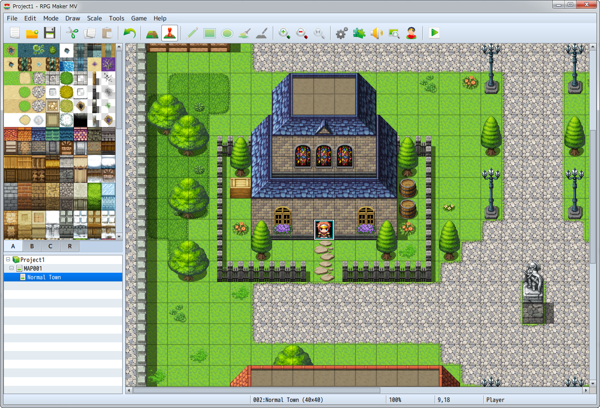
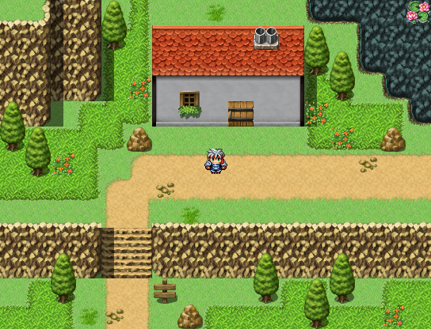
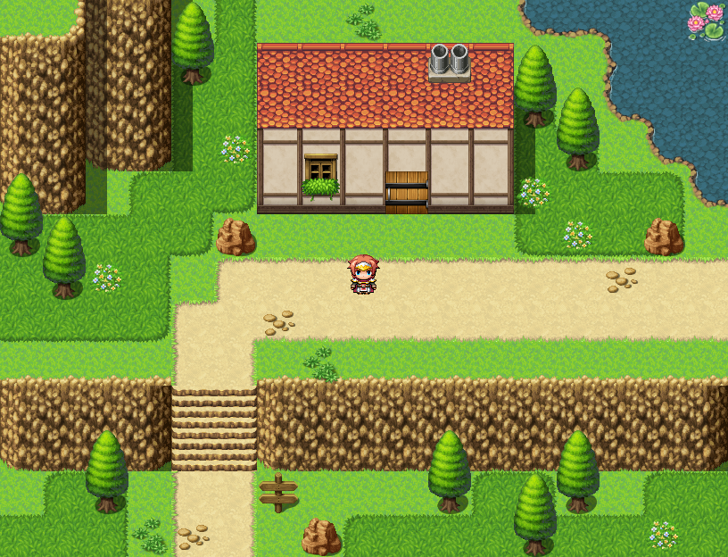
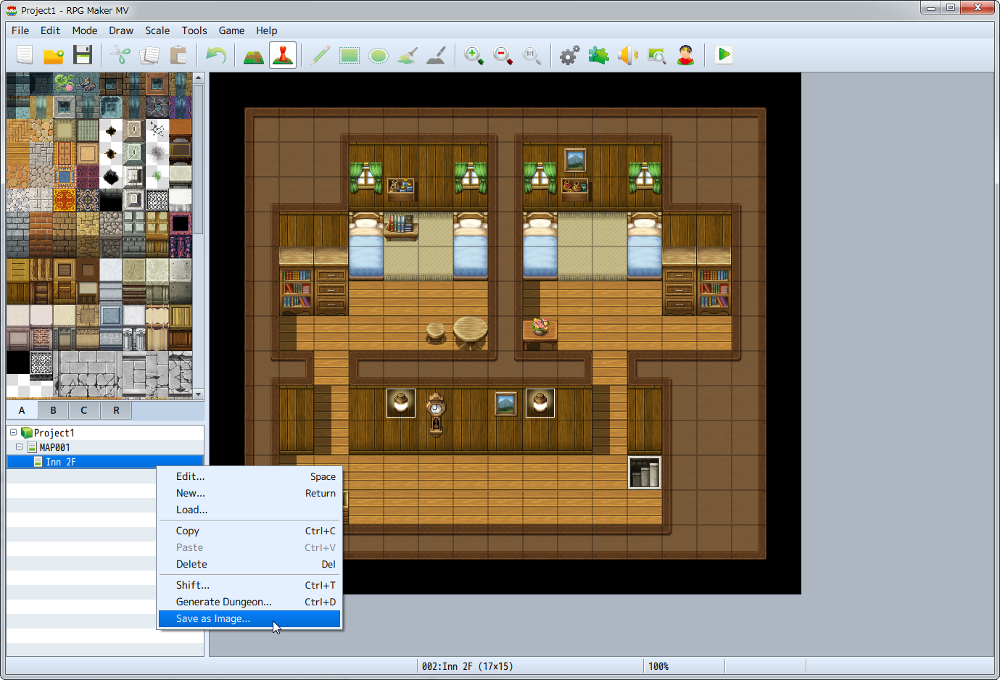

Maps
The map represents the world in which the game will take place. In RPG Maker MV, the map creation feature has been enhanced, allowing users to create a more diverse world.

Main Features
Now possible to create an even richer world.
- Game resolution has been increased from 544x416 to 816x624.
- The upper two tiles can now be automatically overlapped.
- 
RPG Maker VX Ace - 
RPG Maker MV
Enhanced Region Features
Users can now switch to Region Editor Mode using the Tile Palette tab. The maximum number of tiles has been changed from 63 to 255. It is now possible to edit regions in more detail.
Save Maps as Images
It is possible to save the maps you create as images by selecting[Save as Image]from the context menu in the map list.
